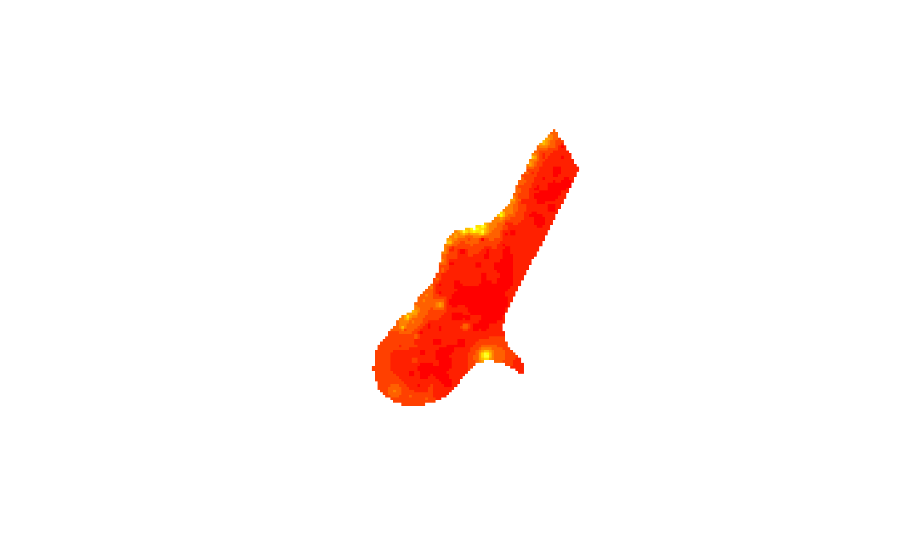

asciigrid.Rdread/write to/from ESRI asciigrid format
read.asciigrid(fname, as.image = FALSE, plot.image = FALSE, colname = fname,
proj4string = CRS(as.character(NA)))
write.asciigrid(x, fname, attr = 1, na.value = -9999, ...)file name
logical; if FALSE, a list is returned, ready to be
shown with the image command; if FALSE an object of
class SpatialGridDataFrame-class is returned
logical; if TRUE, an image of the map is plotted
alternative name for data column if not file name
A CRS object setting the projection arguments of the Spatial Grid returned
object of class SpatialGridDataFrame
attribute column; if missing, the first column is taken; a name or a column number may be given
numeric; value given to missing valued cells in the resulting map
arguments passed to write.table, which is used to write the numeric data
read.asciigrid returns the grid map read; either as
an object of class SpatialGridDataFrame-class or, if
as.image is TRUE, as list with components x, y and z.
x <- read.asciigrid(system.file("external/test.ag", package="sp")[1])
class(x)
#> [1] "SpatialGridDataFrame"
#> attr(,"package")
#> [1] "sp"
image(x)
